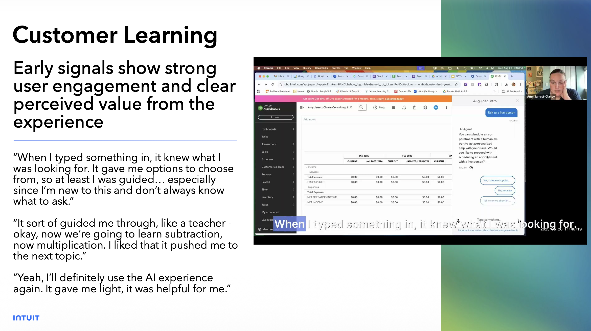
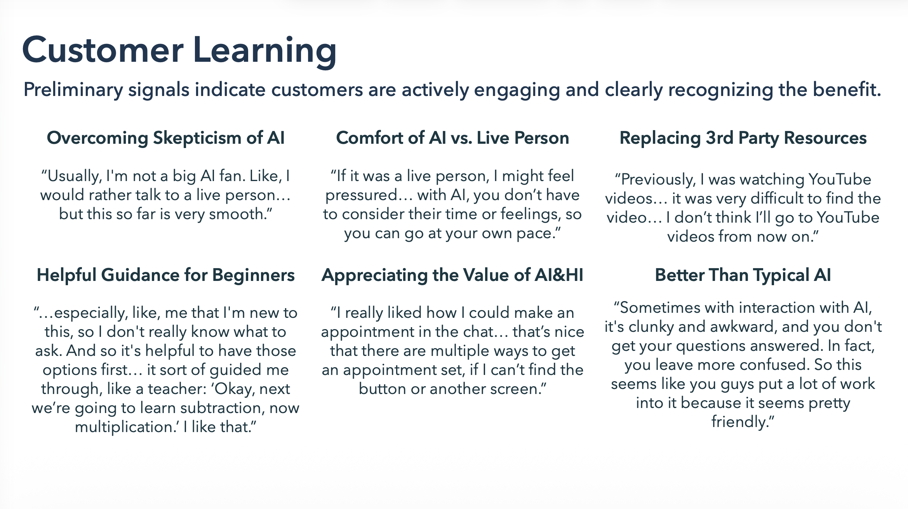
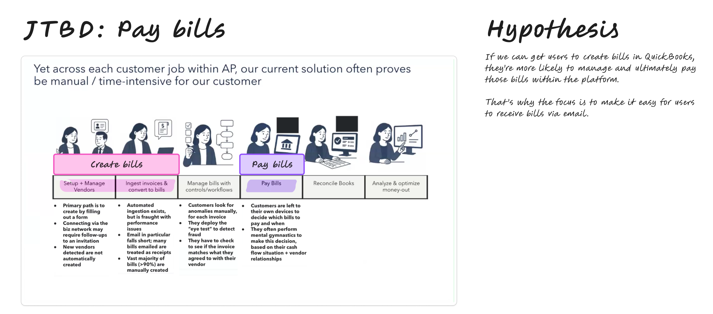
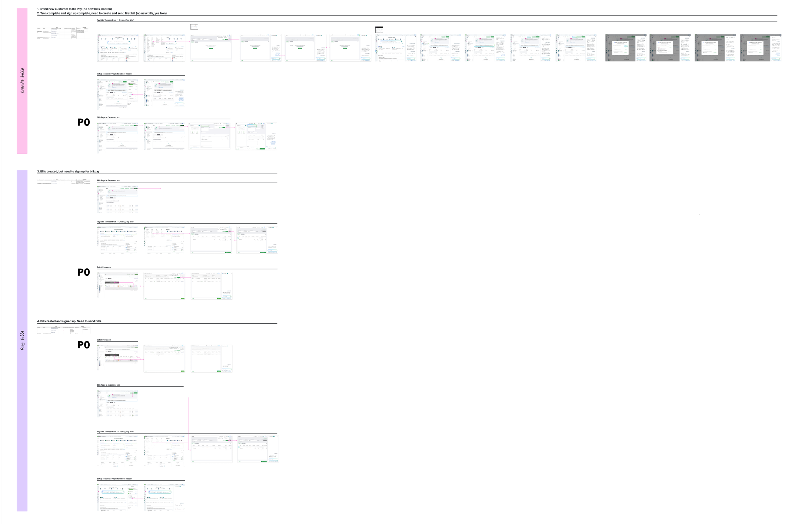
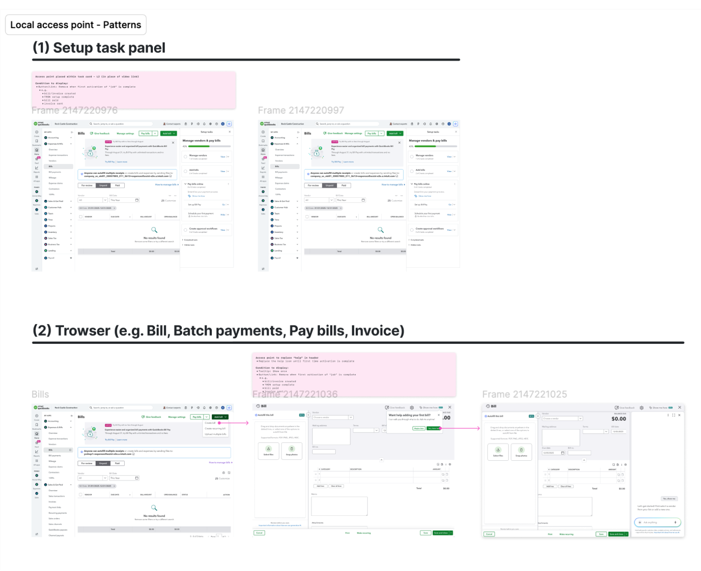
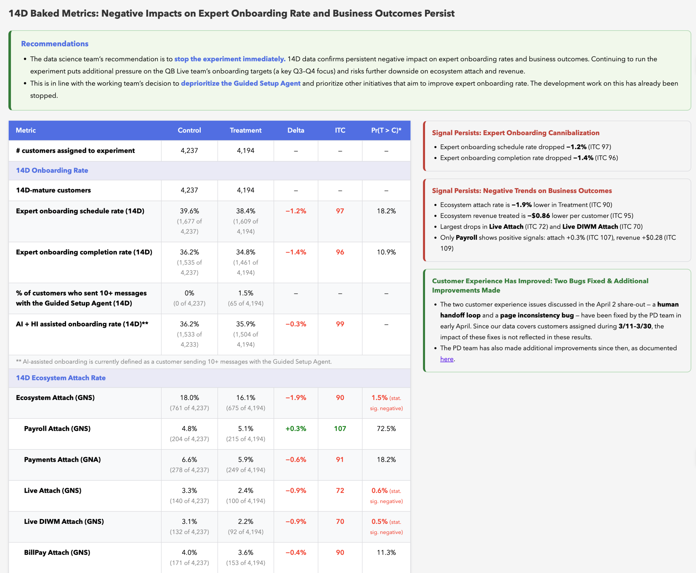

This project helps customers who are new to QuickBooks Online get set up using an Guided setup agent. This AI agent uses a “Guide me” type of conversational experience using voice & text to walk customers through the essential jobs of QuickBooks Online.
Vision: AI first for simple, common setup; Experts for complex or unique issues.
Today new QuickBooks customers are offered a free 45–60 minute Expert call. However, only 17% of customers complete the onboarding call, and 19% of scheduled calls are missed, signaling friction with time-bound scheduling.
New users say bite-sized, self-serve setup help that can be executed on their own schedule is desired.
Problem statement
MVP: “Reports” portion of getting set up (running, customizing, & saving reports) and answering reports-related questions. When a question or topic is out of scope or confidence is low, the agent hands off to a human Onboarding Expert and helps the customer schedule a live call to finish setup with a human expert. Agent is available only during Expert after hours.
V2: Topics expand to other jobs, such as Bill pay, Payments and all of expert onboarding. Agent is available 24/7.
Hypothesis: An AI onboarding agent available anytime to new customers increases ecosystem revenue and reduces cost to serve, without harming conversion or revenue guardrails.
Deliver phased launches for MVP (Reporting) and v2 (Bill pay, payments, expert onboarding script)
What did I do?
“Reports” portion of getting set up—running, customizing, and saving reports—and answering reports-related questions. When a question or topic is out of scope or confidence is low, the agent hands off to a human Onboarding Expert and helps the customer schedule a live call to finish setup with a human expert.
Original prototype was built in figma, this recording is created via Cursor & Grok voice
Evaluated the first-time user experience with the Guided setup agent inside QuickBooks.
The Good
Users broadly embraced the agent as a fast, easy first line of support. Its standout differentiator — highlighting UI elements and guiding navigation inside QuickBooks — was praised by nearly all participants, something third-party tools like ChatGPT cannot replicate. New users in particular saw strong learning potential, appreciating the self-paced, step-by-step format. Most users preferred starting with AI before escalating to a live expert.


The Gaps
Several friction points tempered enthusiasm. Users expected deeper, domain-specific answers and were disappointed by surface-level responses. Dead-end interactions (e.g., buttons that promised actions but delivered nothing) eroded trust. Discoverability of the agent via expected entry points (Help, Contact Experts) was inconsistent, and latency noticeably degraded the overall experience.
Voice & Speech Controls
Rachel (Voice D) was the recommended voice based on user preference testing. Additionally, users broadly wanted more control, e.g. faster speech, the ability to turn audio off, and language options like Spanish.
Bottom line
Users are receptive to the agent and see real value in it, but trust depends on closing the gap between what it promises and what it delivers — in functionality, responsiveness, and scope clarity.
Collaborated with the Bill Pay team to define the Guided Setup Agent around the highest-impact use cases and friction points.



Report authored by Zhen Wang on the Analytics team

The Guided Setup Agent was shut down in May 2026 after it negatively impacted Expert onboarding metrics.